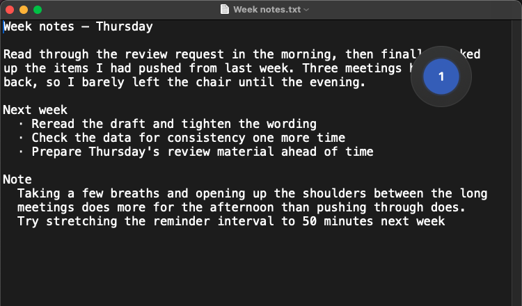
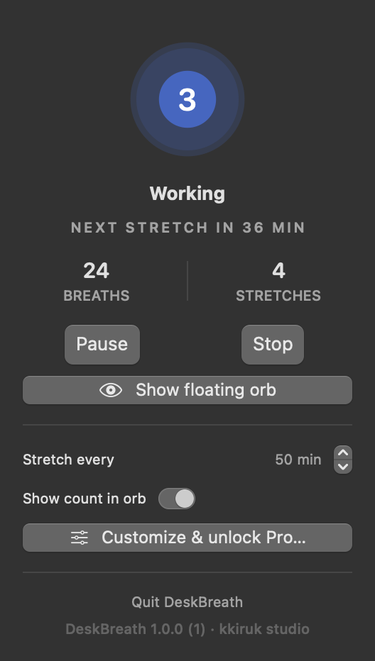
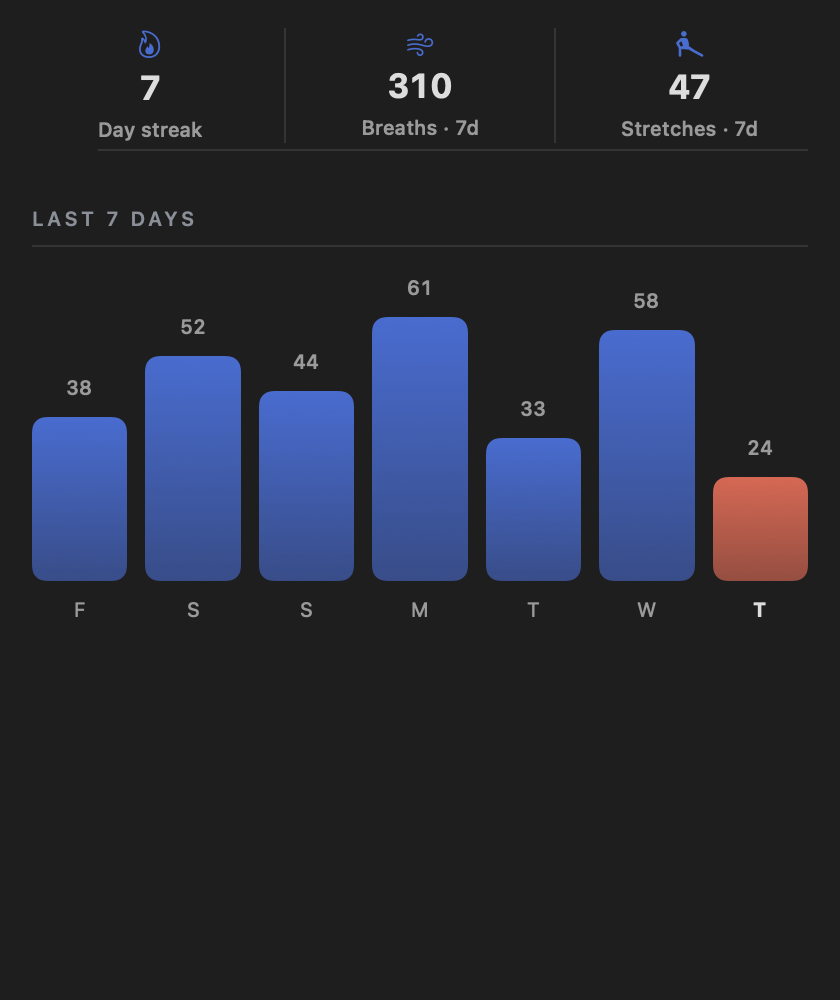
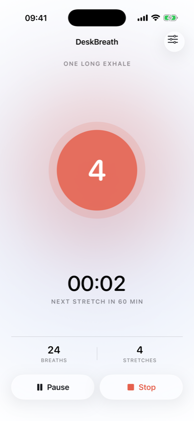
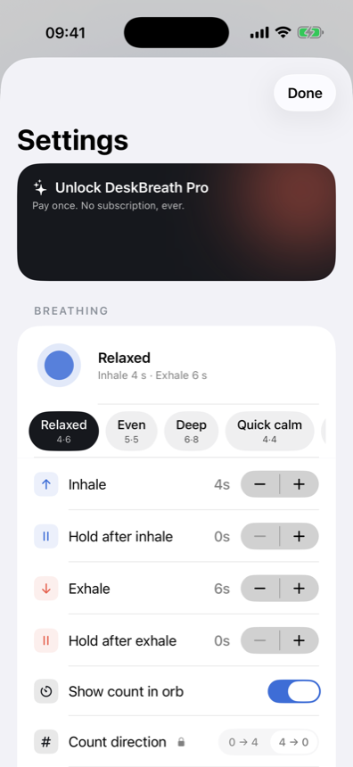
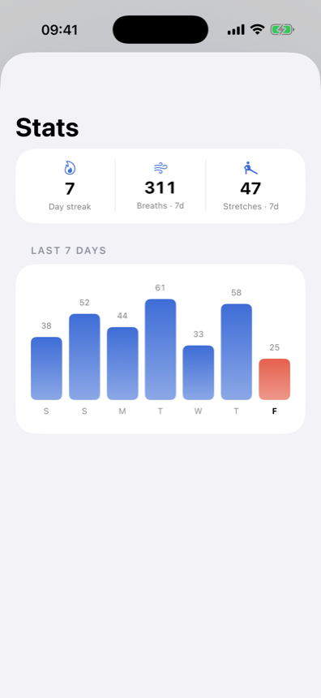

菜单列上一颗呼吸圆，替你数着吸气 4 秒、吐气 6 秒。手边的事照做就好。
免费开始 · iPhone 与 Mac · 没有订阅
默认节奏是吸气4秒、吐气6秒。也可以切换成箱式呼吸、4-7-8，或自行设置秒数。每个阶段都有不同的震动，不看屏幕也能跟上节奏。






开始需要的都在这里
一次付费，没有订阅
菜单列上一颗呼吸圆，替你数着吸气 4 秒、吐气 6 秒。忙的时候可以跳过，工作时段满 10 小时会自动结束。iPhone 与 Mac，免费开始，没有订阅。